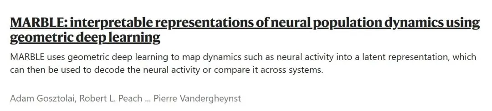
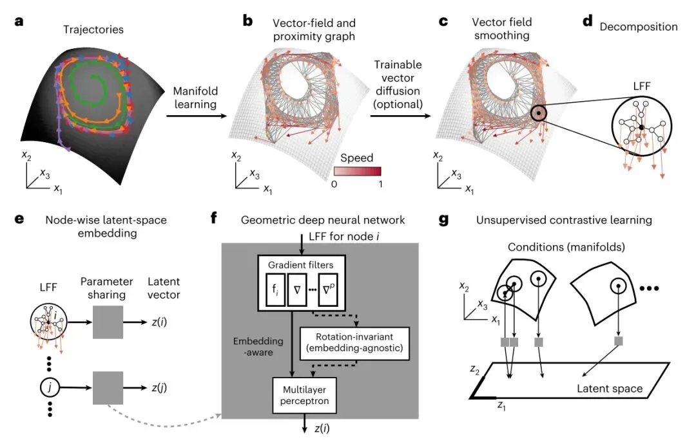
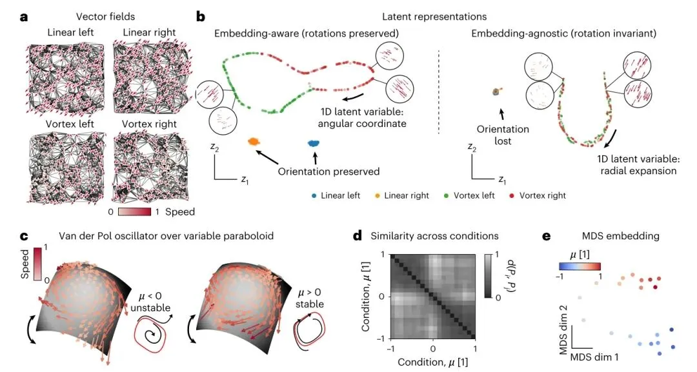
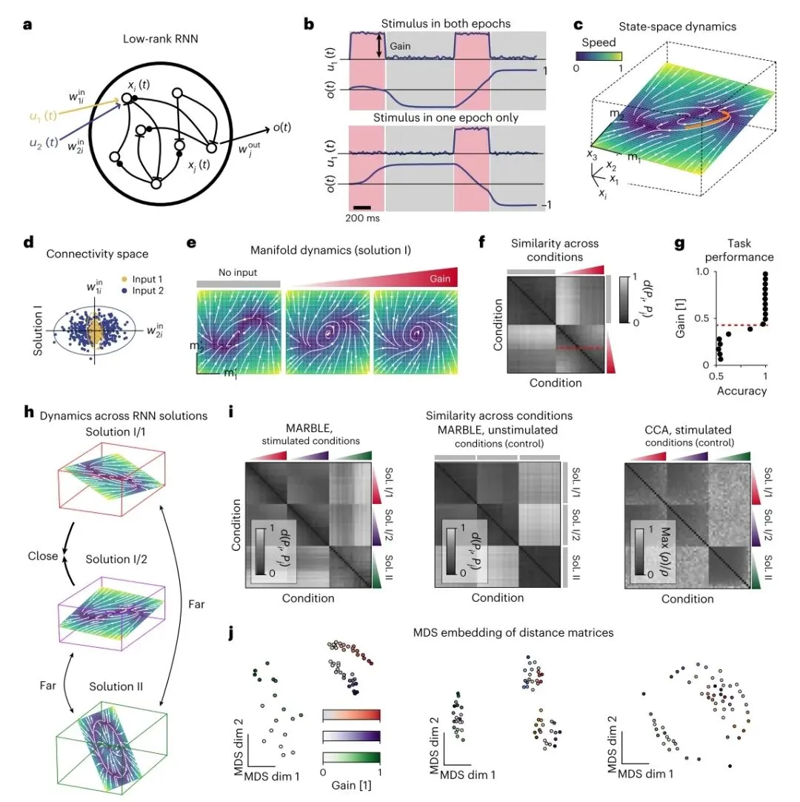
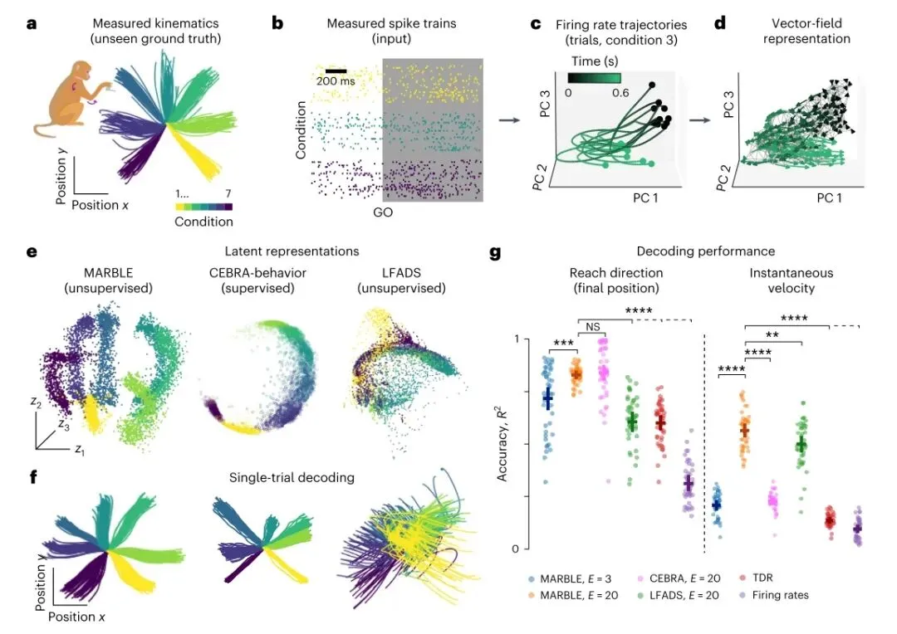
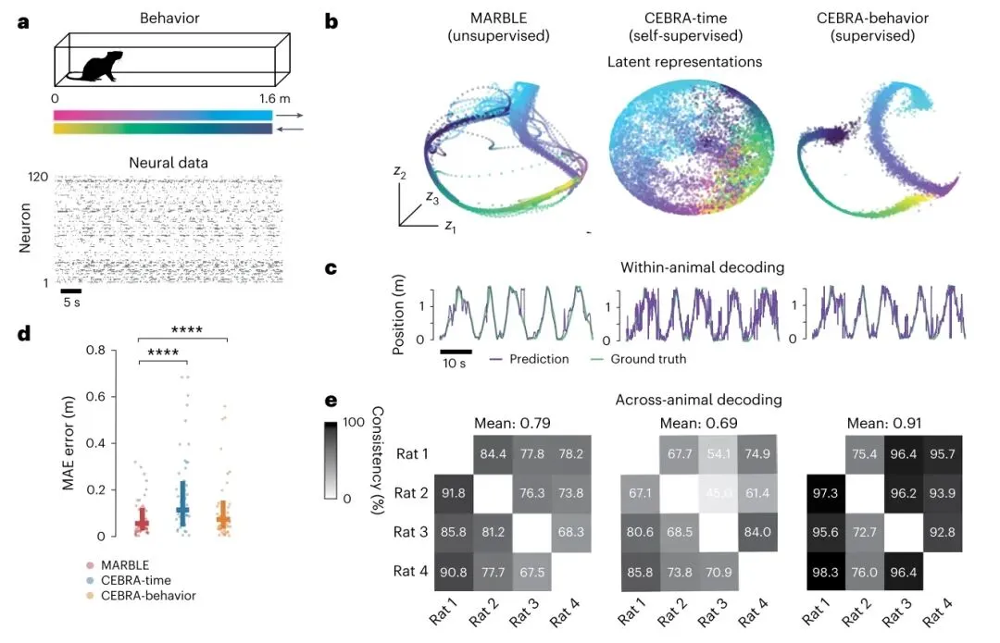

《Nature Methods》新算法|MARBLE利用几何深度学习解释神经群体动力学
原文：https://mp.weixin.qq.com/s?__biz=MzAwMzIzOTk5OQ==&mid=2247528354&idx=1&sn=bf6ee54e2e3f6fe8c3a6ce822f21f8a8&chksm=9b3c16f2ac4b9fe4d12f252c86d7c293090d1af0d24477d35029878a05930959bb35c416d78e#rd 合集：空间转录组 / 文献速递
一、写在前面
本次分享的是2025年2月发布于《Nature Methods》的题为"MARBLE:interpretable representations of neural population dynamics using geometric deep learning"的文章。在神经科学和机器学习领域交汇的今天，我们不断探索如何从复杂的神经活动中提取有意义的信息。这篇介绍 MARBLE 方法的文章，巧妙地利用几何深度学习，以无监督的方式分解神经流形上的动力学，并映射到统一的潜在空间中。MARBLE 为我们提供了一个强有力的工具，用于比较不同系统和个体间的神经动力学，并以此揭示神经计算的潜在规律，相信会启发神经科学、机器学习等领域的研究者在数据分析和模型构建方面的新思路。感兴趣的同学可以看看原文：

Gosztolai A, Peach RL, Arnaudon A, Barahona M, Vandergheynst P. MARBLE: interpretable representations of neural population dynamics using geometric deep learning. Nat Methods. 2025 Feb 17. 机器学习基础教程可见：机器学习基础手册生信Python速查手册 如果大家需要数据库搭建、分析指导 、生信热点全文复现 、自测数据个性化分析 辅导等合作，欢迎联系客服微信[Biomamba_yunying]二、主要内容
2.1 流形上矢量场的无监督表示
为了表征任务中的神经计算，例如决策或伸手动作，典型的实验涉及一组在刺激或任务条件下进行的试验。这些试验产生一组d维时间序列{(t;c)}，表示d个神经元(或维度减少的变量)在条件c下的活动，我们认为这些活动是连续的，例如发射率。通常，人们会在不同的条件下进行记录，以发现神经状态的总体潜在结构或所有任务参数化的潜在变量。为了进行这样的发现，需要一种度量标准来比较不同条件或动物之间的动态流场，并揭示神经机制的变化。这具有挑战性，因为神经状态往往呈现出复杂但采样稀疏的非线性流场。此外，由于记录的神经元不同，在不同参与者和不同会话中，神经状态可能以不同的方式嵌入。
针对上述挑战，MARBLE 采用了一种新的方法。它将每个条件 c 下的一组试验 {x(t ; c)} 作为输入，并在共享潜在空间中表示底层未知流形上的局部动力学流场（图 1a 显示了一个流形）。这种方法旨在揭示跨条件的动力学关系。为了应对这些挑战，MARBLE 将每个条件 c 下的一组试验 {x(t ; c)} 作为输入，并在共享潜在空间中表示底层未知流形上的局部动力学流场（图 1a 显示了一个流形）。这种方法旨在揭示跨条件的动力学关系。为了利用流形结构，我们假设对于固定的 {x(t ; c)} 在动态上是一致的，即由相同但可能随时间变化的输入所控制。。这允许将动力学描述为一个向量场 F c = (f 1(c), …, f n ( c ))，该向量场锚定到一个点云X c = (x 1(c), …, x n ( c))，其中 n 是采样的神经状态的数量（图 1b）。我们通过构建 X c 的邻近图来近似未知流形（图 1b），并使用它来定义每个神经状态周围的切空间以及附近向量之间平滑性（平行移动）的概念（补充图 1 和公式 (2)）。这允许定义一个可学习的向量扩散过程（公式 (3)），以降低流场噪声，同时保留其固定点结构（图 1c）。流形结构还允许将向量场分解为局部流场 (LFF)，对于每个神经状态 i ，LFF 被定义为向量场，其距离在图上最多为 p （图 1d），其中 p 也可以被认为是局部逼近向量场的函数的阶数。这会将 d 维神经状态提升到 O(d p+1)-维空间，以编码神经状态的局部动力学环境，从而提供关于扰动的短期动力学效应的信息。请注意，时间信息也被编码，因为连续的神经状态通常在流形上是相邻的。正如我们将要展示的，这种更丰富的信息大大增强了我们方法的表征能力。

图1：MARBLE 方法：流形上动力学的无监督表征。a，不同试验（颜色）中的神经活动在潜在流形上演变。b，动力学的向量场表示。神经状态之间的最近邻图近似于未知的流形。c，向量场通过可训练的向量扩散进行可选的降噪，该向量扩散对齐（通过平行移动）附近的向量，同时保留固定点结构。d，动力学被分解为 LFF（局部流场，代表神经元活动在短时间内的变化）。e，LFF 通过几何深度神经网络逐个映射到潜在空间。该模型根据相似的 LFF 推断跨数据集的动力学重叠。f，该模型有三个步骤：使用 p 阶梯度滤波器从 LFF 中提取特征；（可选）转换为旋转不变特征以实现与嵌入无关的表征（否则，表征与嵌入相关）；以及使用多层感知器将特征映射到潜在空间。g，使用流形上的连续性，网络使用无监督对比学习进行训练，将相邻的 LFF 映射得较近，而非相邻的 LFF（在流形内部和跨流形）映射得较远。
由于 LFF 编码了局部动力学变化，因此它们在动力学系统中普遍存在。因此，它们不像在监督学习中那样将标签分配给神经状态。相反，我们使用无监督几何深度学习架构将 LFF 单独映射到 E 维潜在向量（图 1e），这引入了参数共享，并允许识别跨条件和系统的重叠 LFF。该架构由三个组件组成（图 1f，有关详细信息，请参见“方法”）：(1) p 梯度滤波器层，可提供 LFF 周围的最佳 p 阶近似值（补充图 1-3 和公式 (8)）；(2) 具有可学习线性变换的内积特征，使潜在向量对于表现为 LFF 中局部旋转的神经状态的不同嵌入是不变的（扩展数据图 1 和 2 和公式 (10)）；以及 (3) 输出潜在向量 z i 的多层感知器（公式 (11)）。该架构具有多个与训练和特征提取相关的超参数（补充表 1 和 2）。虽然大多数超参数都保持在默认值，并导致收敛训练，但有些超参数会发生变化，如补充表 3 所示，以调整模型的行为。它们的效果在下面的示例中进行了详细说明。网络以无监督方式进行训练，这是可能的，因为 LFF 在流形上的连续性（相邻的 LFF 通常比非相邻的 LFF 更相似（固定点除外））提供了一个对比学习目标（图 1g 和公式 (12)）。
潜在向量集 Z c = (z 1(c), …, z n ( c)) 将条件 c 下的动力流场表示为经验分布 P c。同时映射多个动力流场 c 和 c ′，这些动力流场可以表示系统中的不同条件，也可以表示完全不同的系统，从而可以事后定义一个距离度量 d(Pc , Pc ′)，用于衡量它们潜在表征 Pc 和 Pc ′ 之间的距离，反映了它们之间的动力学重叠。我们使用最优传输距离（公式 (13)），因为它利用了潜在空间中度量结构的信息，并且通常在检测基于重叠分布的复杂交互时优于熵度量（例如，Kullback-Leibler (KL) 散度）。
2.2 与嵌入相关和与嵌入无关的表征
内积特征（图 1f）允许两种操作模式。例如，考虑图 2a 中二维 (2D) 平面（ d = 2，平凡流形）上的线性和旋转动力流场。稍后将显示，MARBLE 还可以捕获复杂的非线性动力学和流形。我们将这些动力流场标记为不同的条件（将它们视为不同的流形），并使用 MARBLE 来发现生成它们的一组潜在向量。

图2：跨条件和流形的联合 MARBLE 潜在表征的说明性示例。a，在由图（黑线）近似的平坦（平凡）流形上均匀随机采样的四个玩具向量场。两个恒定场（顶部）和两个旋转场（底部）。b，与嵌入相关的表征区分 LFF 中的旋转信息（左）。潜在空间中的环形流形参数化角度变化（插图）。与嵌入无关的潜在表征仅学习向量场的扩展和收缩（右）。潜在空间中的一维 (1D) 流形参数化 LFF 的径向变化（插图）。c，范德波尔振荡器在不稳定 (μ = −0.25) 和稳定 (μ = 0.25) 状态下，在变量曲率抛物面上的向量场，从随机初始化的轨迹中采样。插图显示了红色极限环和垂直投影视图中的代表性轨迹。d，基于相应 MARBLE 表征之间的最优传输距离的跨条件相似性。聚类表明在 μ = 0 处发生了突变的动力学变化。e，分布距离矩阵的 2D MDS 嵌入恢复了参数 μ 在两个弱连接的一维流形上的排序。
在与嵌入相关的模式下，禁用内积特征（图 2b，左），以学习 LFF 的方向，从而确保最大的表达能力和可解释性。因此，恒定场被映射到两个不同的簇中，而旋转场基于 LFF 的角度方向分布在环形流形上（图 2b，左，插图和扩展数据图 1 和 2）。当在给定的动物或神经网络中表示跨条件的动力学时，此模式很有用，因为采样了相同的神经元（图 2c-e 和 3a-g），或者当寻求跨所有条件的全局几何形状时（图 4e）。
在与嵌入无关的模式下，启用内积特征，使学习的特征对于 LFF 的旋转变换是不变的。因此，向量场的潜在表征对于引入局部旋转的不同嵌入（共形映射）将是不变的。因此，当比较系统时，例如从不同初始化训练的神经网络时，此模式很有用（图 3h-j）。我们的示例表明，恒定向量场不再基于 LFF 方向来区分（图 2d，右，插图和扩展数据图 1 和 2）；但是，我们仍然捕获一维流形上 LFF 中的扩展和收缩（扩展数据图 3）。在与嵌入相关和与嵌入无关的示例中，请注意，来自不同流形（由用户标签定义）的 LFF 根据其动力学信息映射得较近或较远，从而证实标签用于特征提取而不是用于监督。
2.3 比较循环神经网络中的动力学
最近，人们对 RNN 作为神经计算的替代模型产生了浓厚的兴趣。先前用于比较给定任务的 RNN 计算的方法依赖于对齐神经状态的线性子空间表征，这需要跨条件对试验进行逐点对齐。当试验平均轨迹很好地近似单次试验动力学时，这有效，但当动力流场受复杂的固定点结构控制时，则无效。因此，系统地比较跨 RNN 的计算需要准确地表征非线性动力流场。
为了在复杂的非线性动力学系统上展示 MARBLE，我们使用具有秩 2 连接矩阵的 RNN 模拟了延迟匹配样本任务（图 3a 和“方法”），先前已表明该矩阵具有足够的表达能力来学习此任务。这种常见的上下文决策制定任务包括具有可变增益的两种不同刺激，以及由延迟分隔的可变持续时间的两个刺激时期（图 3b）。在单位增益下，我们训练 RNN 在两个时期都存在刺激时收敛到输出 1，否则收敛到 -1（图 3b）。正如预期的那样，训练后的网络的神经动力学在随机定向的平面上演变（图 3c）。然而，我们发现，不同初始化的网络产生两类解：在解 I 中，神经元专门用于感测两个刺激，其特征在于其输入权重 w 1 i 和 w 2 i 的聚类（图 3d），而在解 II 中，神经元在两个刺激之间进行泛化（扩展数据图 5d）。这两种解表现出定性上不同的固定点格局（零增益时为三个固定点，足够大的增益时为一个极限环），无法通过连续（线性或非线性）变换对齐（图 3e 以及扩展数据图 5c、e 和 6）。
我们首先询问 MARBLE 是否可以推断神经动力学与任务性能损失的相关性，因为刺激增益会降低到决策阈值以下。对于给定的增益，由于随机性，我们模拟了 200 个不同持续时间的试验，采样了非线性动力流场的不同部分（扩展数据图 6）。我们通过在刺激开始和结束时细分试验来形成动态一致的数据集，以获得四个时期。然后，我们形成了两个组，一组来自刺激打开的时期，另一组来自刺激关闭的时期（图 3b）。针对不同的增益重复此操作，我们获得了 20 组不同增益的刺激时期和另外 20 组非刺激（无增益）时期。我们将后者用作阴性对照，因为动力流场在它们之间变化是由于采样可变性而不是增益调制。然后，我们训练与嵌入相关的 MARBLE 将所有 40 个组（标记为不同的条件）映射到共享潜在空间中。所得的条件之间的表征相似性矩阵表现出块对角结构（图 3f）。左上角的块表示非刺激对照之间的距离，并且包含消失的条目，这证明了 MARBLE 对采样可变性的鲁棒性。分层聚类识别的两个右下角子块表明动力学发生了定量变化，这尤其对应于任务性能从 1 突然下降（图 3g）到 0.5（随机）。因此，MARBLE 能够检测可以根据全局决策变量解释的动力学事件。

图3： 比较循环神经网络中的动态过程。a， 低秩 RNN 接收两个刺激作为输入，并产生一个决策变量作为读出。b， 延迟匹配样本任务的两个代表性刺激模式（仅显示一个刺激）和决策结果。在刺激时期（红色）输入幅度由“增益”控制，否则为零（灰色）。c， 训练好的秩为 2 的 RNN 的神经动力学在一个随机方向的平面上演化。场动力学的相图叠加了试验期间的轨迹（橙色）。d， 训练好的 RNN 中输入权重的空间。颜色表示 k-means 聚类，具有两个亚群，分别专门处理一个或另一个输入。椭圆表示拟合的高斯分布的 3 × 标准差。e， 增益为 0、0.32 和 1.0 时的平均场动力学。f， 基于相应嵌入感知 MARBLE 表征之间的最优传输距离，增益条件（阴影表示从 0 到 1 的增益）之间的相似性。层次聚类表明非零增益子块中有两个簇，表明存在一个质变点（红色虚线）。g， 预测的变化点对应于分岔，导致任务性能下降。h， 从不同初始化训练的网络可能在不同嵌入的流形上具有不同的动力学（解 I、II）。从相同权重分布采样的网络在不同嵌入的流形上产生相同的固定点结构（解 I/1、I/2）。i， 基于嵌入无关表示，跨网络和增益（左）或无增益（对照，中）的相似性。我们将其与 CCA (典型相关分析)（右）进行比较。阴影表示从 0 到 1 的增益。j， 距离矩阵的 MDS 嵌入显示了增益调制期间潜在状态的连续变化（左），无增益条件下的无变化（中）以及跨网络解决方案的聚类。对于 CCA，相同的图显示了跨网络解决方案的聚类，但没有由于增益调制引起的变化。
接下来，我们定义了跨不同 RNN 的动力学流之间的相似性度量。考虑网络解 I 和 II，它们具有不同的动力流场（图 3h），并且作为阴性对照，两个新网络的权重从解 I 的高斯分布中随机采样，其动力流场可证明保留了固定点结构。由于跨网络的神经状态的任意嵌入，我们使用与嵌入无关的 MARBLE 来表示来自这三个 RNN 在不同增益下的数据 ( E = 5)。我们发现，潜在表征对流形方向不敏感，检测到跨对照网络（解 I/1 和 I/2）的相似动力流场，以及跨解 I 和 II 的不同动力流场（图 3i，左）。此外，相似性矩阵的多维缩放 (MDS) 嵌入显示了一维线流形（图 3j，左），参数化了增益调制条件下有序的连续变化。正如预期的那样，对于非刺激条件，我们仍然可以区分不同的网络解，但不再发现连贯的动力学变化（图 3i, j，中间）。为了进行基准测试，我们使用了 CCA，它可以量化不同条件下数据的线性子空间表征可以在多大程度上线性对齐。虽然 CCA 可以区分具有不同固定点结构的解 I 和 II，但它无法检测到由于增益调制而产生的动力学变化（图 3i, j，右）。这表明，使用 CCA 在动物之间找到连贯的潜在动力学可能已在以下情况下成功：线性子空间对齐等同于动力学对齐，例如，当试验平均动力学很好地近似单次试验动力学时。在这里，我们发现 MARBLE 提供了更一般的非线性动力流场之间稳健的度量，这些流场可能由不同的系统架构生成。
2.4 表示和解码手臂抓取期间的神经动力学
神经动力学的最先进的表征学习使用神经和行为信号的联合嵌入；然而，最好将生物学发现建立在对神经表征的事后解释的基础上，这些表征不会基于行为信号在神经状态和潜在表征之间引入相关性。为了证明这一点，我们重新分析了猕猴执行延迟的中心向外手臂抓取任务的电生理记录（“方法”）。在任务期间，训练有素的猴子将手柄移动到从起始位置径向位置处的七个不同的目标。该数据集包括来自前运动皮层的 44 个记录会话（图 4b 显示了一个会话）中使用 24 通道探针同时记录的手部运动学（图 4a）和神经活动。

图4：手臂抓取期间神经活动的可解释表征和解码a，猕猴在七个抓取条件下真实的手部轨迹。猴子图像由 Andrea Colins Rodriguez 改编自 https://www.scidraw.io/drawing/445, CCBY 4.0。b，三种抓取条件下前运动皮层中的单次试验尖峰序列（每种颜色中 24 个记录通道）。阴影区域显示了 GO 提示后的分析轨迹。c，在抓取条件下（向上）PCA 嵌入在三个维度中的放电率轨迹，用于可视化。d，从放电率轨迹获得的向量场。e，单个会话中跨条件的神经数据的潜在表征。CEBRA 行为与抓取条件作为标签一起使用。MARBLE 表征揭示了潜在的全局几何排列（圆形和时间顺序），跨越反映物理空间的所有抓取，作为涌现属性。f，从潜在表征中对手部轨迹进行线性解码。g，通过地面实况和所有会话的最终位置（左）和瞬时速度（右）之间的解码轨迹测量的解码精度 R2。双侧 Wilcoxon 检验（配对样本），P < 1 × 10-2; P < 1 × 10-3；**** ******P < 1 × 10-4; NS，不显著。水平和垂直条分别显示平均值和 1 × s.d., 分别 (n = 43)。
先前的监督方法揭示了跨不同抓取条件的潜在状态的全局几何结构。我们询问是否可以从 MARBLE 表征中的局部动力学特征中涌现出这种结构。与以前一样，我们从每个抓取条件的放电率构建了动态一致的流形（图 4c, d），这允许提取 LFF。然而，跨条件的潜在表征仍然是涌现的，因为 LFF 是局部的并且跨条件共享。使用这些标签，我们训练了一个与嵌入相关的 MARBLE网络，并针对其他两种突出的方法对其进行了基准测试：CEBRA，我们将其用作使用抓取条件作为标签的监督模型（CEBRA 行为）和 LFADS，这是一种使用生成循环神经网络的无监督方法。
我们发现，MARBLE 表征 (E = 3) 可以同时发现参数化抓取内位置的时间序列的潜在状态以及跨抓取的全局圆形配置（图 4e 和扩展数据图 7a）。后者通过以下事实得到证实：跨抓取条件的潜在表征之间的条件平均相似性矩阵的对角线和周期性结构（扩展数据图 7b）和关联的 MDS 嵌入中的圆形流形（扩展数据图 7c）。相比之下，虽然 CEBRA 行为可以展开抓取的全局排列，但由于监督，神经状态在条件内聚集，这意味着时间信息丢失了。同时，LFADS 表征保留了试验内的时间信息，但没有保留空间结构（图 4e）。值得一提的是，TDR 同样展示了抓取任务的时空结构，但其效果不及 MARBLE 或 CEBRA（后者使用物理抓取方向作为监督信号，见扩展数据图 8）。其他不明确表示动力学的无监督方法（例如 PCA、t-SNE 或 UMAP）没有发现数据中的任何结构（扩展数据图 9）。因此，MARBLE 可以作为 LFF 的涌现属性发现神经代码中的全局几何信息。
这种基于神经和行为表征之间的几何对应关系的可解释性表明了一个有效的解码器。为了证明这一点，我们拟合了潜在表征及其相应的手部位置之间的最佳线性估计器，该估计器广泛用于脑机接口，并基于潜在状态参数化复杂非线性动力学的能力来衡量可解释性。值得注意的是，解码的运动学显示出与 CEBRA 行为相当且与 LFADS 相比明显更好的真实值的极佳视觉对应性（图 4f 和扩展数据图 7d）。最终抓取方向和瞬时速度的十分交叉验证分类（图 4g）证实，虽然可以从三维 (E = 3) 潜在空间解码抓取方向，但由于 GO 提示和运动开始之间的可变延迟，解码瞬时速度需要更高的潜在空间维度 (E = 20；图 4g）。值得注意的是，MARBLE 在速度解码方面优于竞争方法（图 4g），表明它可以表示延迟和完整运动学。总而言之，MARBLE 可以推断出可同时解释并可解码为行为变量的神经动力学表征。
2.5 跨动物的一致潜在神经表征
最近的实验证明了给定任务中动物之间神经表征的强烈相似性 ，这对脑机接口具有深远的影响；然而，如上所示（图 3i, j），诸如 CCA 和相关形状度量之类的线性子空间对齐通常无法捕获以其他方式保留神经流形几何形状的动力学变化。虽然可以通过辅助线性或非线性变换对齐多个潜在表征，但这依赖于以下假设：相应的神经元群体编码相同的动力学过程。
鉴于 MARBLE 可以产生跨 RNN 的可比较的潜在表征（图 3h, i）并且可以在 RNN（图 3e-g）或动物（图 4h-j）中解释，我们最终询问它是否可以产生跨动物的一致可解码的潜在表征。为此，我们重新分析了大鼠在导航线性轨道时，从大鼠海马体中记录的电生理数据 （图 5a 和“方法”）。仅从神经数据中，MARBLE 可以推断出可解释的表征，包括神经状态空间中的一维流形，表示动物的位置和行走方向（图 5b）。值得注意的是，无监督 MARBLE 表征比使用 CEBRA 时间（由神经状态上的时间标签监督）获得的表征更具可解释性，并且与使用行为（位置和运行方向）作为标签的 CEBRA 行为相当（图 5b）。这一发现通过使用 k 均值解码器的显著更高的解码精度得到证实（双侧 Wilcoxon 检验， P < 1 × 10-4）（图 5c, d）。

图5：大鼠在直线性迷宫导航期间，海马神经活动的可解释表征和跨动物解码a，大鼠在直线性迷宫中导航的实验设置，其中跟踪运动的位置和方向（顶部）。栅格图显示了单个会话中 120 个神经元的尖峰活动（底部）。大鼠图像来源：[designer_an]/stock.adobe.com。b，无监督 MARBLE 与自监督（仅时间标签）和监督（时间、位置和方向标签）CEBRA 的潜在表征 ( E* = 3) 的比较。颜色阴影在 a 中定义。c，大鼠 1 中线性解码的动物位置的时间轨迹 (E = 32，来自 CEBRA 解码笔记本示例的默认设置）。d，同一动物内的解码精度。双侧 Wilcoxon 检验（配对样本），****** ******P < 1 × 10-4。水平和垂直条分别显示平均值和 1 × s.d. (n = 2,000)。e，跨动物一致性，通过将源动物的优化对齐的 3D 潜在表征线性拟合到目标动物的 R2 来衡量。
**当我们使用动物之间的线性变换对 MARBLE 表征进行事后对齐时，我们发现它们在动物之间是一致的。使用一个动物作为源，另一个动物作为目标，通过线性模型训练，使用 R 2 拟合量化的一致性对于 MARBLE 高于 CEBRA 时间，但不如 CEBRA 行为那么好（图 5e）。值得注意的是，MARBLE 不依赖于行为数据，但由于动物之间的实验和神经生理学差异，它发现了Consistent EmBeddings。这些发现强调了 MARBLE 在数据驱动的发现和脑机接口等应用中的潜力。 **
三、讨论
大型集体系统（如大脑）的一个标志是存在许多系统实现，这些实现导致由群体层面动力学过程定义的等效计算。人们越来越认识到，生物和人工神经网络中的动力学在低维流形上演变，这提供了一个机会来协调跨系统实现的动力学可变性与计算的观察到的不变性，方法是在学习动力学表征时使用流形几何形状作为归纳偏置。我们已经证明，非线性动力学系统可以通过 LFF 的分解表示出来，并将这些LFF 共同映射到潜在空间中。由于动力学在流形上是连续的，因此可以使用无监督几何深度学习来学习这种映射。此外，通过使提取的 LFF 旋转不变，可以使潜在表征对动力学的不同嵌入具有鲁棒性。这些属性使我们可以比较跨动物和人工神经网络实例的动力学。
为了表示神经状态，MARBLE 使用条件标签来提供结构知识，即动态一致的神经状态轨迹之间的邻接信息（共享输入模式）。虽然邻接信息允许提取特征 (LFF)，但它不会在神经状态（输入）和潜在状态（输出）之间引入相关性，因为学习是通过无监督算法执行的，并且这些特征不强加条件分配，因为它们在条件之间广泛共享。我们的方法在精神上与谱聚类相似，在谱聚类中，用户定义邻接信息，该邻接信息用于提取特征（拉普拉斯特征向量），然后将其馈送到无监督聚类算法（k 均值）中。同样，聚合条件内的试验类似于将 PCA 应用于条件平均试验，但 MARBLE 不跨试验进行平均。这对于表示复杂非线性状态空间具有深远的影响，在这种状态空间中，平均没有意义。相比之下，在监督表征学习中，标签指导神经状态的嵌入，其中相似标签的神经状态靠在一起，而不同标签的神经状态靠得很远。我们注意到，就用户输入而言，MARBLE 比 LFADS 要求更高，LFADS 不需要条件标签。因此，LFADS 可能更适合于可能发生意外输入的系统；但是，我们已经表明，这个温和的假设允许 MARBLE 利用流形几何形状作为归纳偏置，以获得更具表现力的表征。
我们的形式主义可以被视为 Sugihara 等人提出的收敛交叉映射框架的统计推广，该框架通过其 LFF 之间的双射映射测试两个动力学系统之间的因果关系。MARBLE 将这个想法推广到 LFF 的分布比较，以提供任何动力学系统集合之间的相似性度量。此外，由于表征的局部性，我们的方法不同于学习全局向量场的典型几何深度学习模型，因此无法分别考虑流形嵌入和动力学。局部性还允许在没有额外可训练参数的情况下同化不同的数据集，以增加模型的统计能力，即使各个数据集的采样不足。虽然我们的方法没有明确地学习时间信息，但时间顺序自然地从我们保留相似性的 LFF 映射到潜在空间中产生。除了用于解释和解码神经动力学之外，我们希望 MARBLE 能够为一般的机器学习任务提供强大的表征。
总而言之，MARBLE 的 LFF 学习方法利用神经流形上的上下文信息，丰富了神经状态的表征。 这种方法能够提供可解释且一致的潜在表征，而在此之前，只有通过使用额外行为信息的监督学习方法才能实现。这表明，不同动物的神经动力流场可以被视为常见潜在动力学的投影，并且可以作为局部流场的保留相似性嵌入的涌现属性来重建。

如何联系我们

 留一个领取资料、免费两周学习版服务器的微信号[Biomamba_yunying]，方便各位随时交流。同时我们也构建了交流群矩阵，欢迎大家入群讨论。
留一个领取资料、免费两周学习版服务器的微信号[Biomamba_yunying]，方便各位随时交流。同时我们也构建了交流群矩阵，欢迎大家入群讨论。
大家可以阅读完这几篇之后添加给生信入门初学者的小贴士 如何搜索公众号过往发布内容
已有生信基地联系方式的同学无需重复添加

 您点的每个赞和在看，我都认真当成了喜欢
您点的每个赞和在看，我都认真当成了喜欢